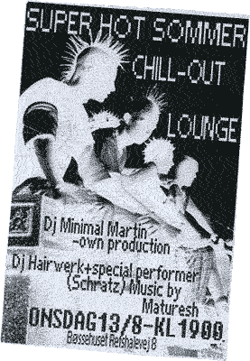

| Ulles Onsdags Lounge | Sommer 2003 |
 |
|
| Her vises en flyer der blev lavet til en af onsdagene. Ulle Dulle lavede en Onsdags Lounge i form af gratis underholdning med lounge DJ's og live sang, Billig bar med Øl, Kaffe, Slik osv. Onsdag den 30. Juli 2003 Onsdag den 13. August 2003 Onsdag den 27. August 2003 Onsdag den 17. September 2003 Ulle Dulle åbnede også sin bar til de 3 Bevar Christiania Events der blev afholdt i Bøssehuset, Til Sankt Hans Aften Modeshow, Samt andre aftener og Tirsdags aktivist-møderne. |
|